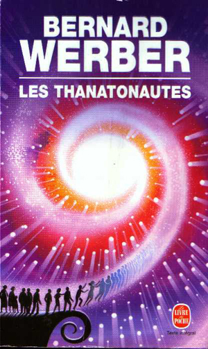

Dernières lectures en ce début 2019
Je vais reprendre la bonne habitude de parler de mes lectures sur le blog. En avant !
Depuis le début de l’année 2019, j’ai eu le plaisir de découvrir 3 romans pour le moins intéressants.
Je vais mieux de David Foenkinos
Ce livre raconte l'histoire d'un homme d'une quarantaine d'années qui doit, du jour au lendemain, apprendre à vivre avec un mal de dos intense. Il consulte différents praticiens et se penche même vers le spiritualisme. De cette douleur dans le dos vont naître de nombreux bouleversements dans son existence.
Points positifs
- Style très immersif
- Chapitrage original et agréable
- Personnage principal attachant
- Intrigue palpitante
Tout au long du livre, j’ai eu envie de savoir ce qu’il allait se passer ensuite. Pourtant, il ne s’agit que du récit de la vie d’une homme lambda, du commun du mortel : métro, boulot, dodo.
Point négatif
- Fin un peu trop facile et heureuse
Je ne vois que ce point négatif, car les différentes tournures que prennent les décisions du personnage l’amènent à une toute autre vie, comme si tout était prédestiné. Se faire dire qu’à quarante ans, il est passé à côté de sa vie et doit tout recommencer autrement pour être heureux, c’est un peu dur à encaisser.
En fin de compte, je recommande ce roman très sympathique. Je pense que tout le monde peut se reconnaître dans certaines scènes de famille ou au travail. Il est agréable de voir la vie d’un inconnu plutôt que la nôtre.
Les Thanatonautes de Bernard Werber
Ici, il est question de voyage mystique et de sciences du futur. Un tout autre registre. Le roman commence sur la jeunesse de l'un des personnages principaux. On le suit ensuite jusqu'à l'âge adulte où il intégrera une équipe de chercheurs pionniers de la thanatonautique, à savoir le voyage dans le monde des morts.
Points positifs
- Originalité de l’intrigue
- Humour
L’idée est étonnante et intéressante. Que se passe-t-il après la mort ? Le livre y répond.
Points négatifs
- Beaucoup trop long
- Interruptions qui cassent le rythme de lecture
- Vire au mysticisme / religieux
Malheureusement, le côté scientifique part vite en lambeaux pour faire place à une vision plutôt religieuse de la vie après la mort. Les passages concernant différentes mythologies et les échanges entre des services inconnus et énigmatiques empêchent une lecture fluide et agréable. Pourtant, l’histoire est prenante et on a envie de savoir comment ça va se terminer. Je suis allée jusqu’au bout, mais j’ai fini par sauter les passages sur la mythologie qui, je pense, pouvaient simplement figurer en annexe.
La fin est un peu brutale aussi. Ça ne m’a pas trop plu. J’ai mis beaucoup de temps à lire ce roman de plus de 500 pages (format poche) et j’ai été un peu déçue de la chute. C’est dommage. Je crois que si quelqu’un me manifeste l’envie de s’y plonger, je me contenterai de lui en dire les grandes lignes pour lui éviter de perdre son temps.
Blanc mortel de Robert Galbraith
Il s'agit du tome 4 des enquêtes de Cormoran Strike, détective privé à Londres. J'ai entamé la lecture de ce roman aussitôt qu'il est sorti, car je venais de regarder la série adaptée des 3 romans précédents et je l'ai trouvée excellente. J'aime Strike et Robin, qui sont deux personnages très intéressants, complexes et complémentaires. Même si les enquêtes sont indépendantes les unes des autres et qu'il n'y a, a priori, aucune raison de se ruer sur la suite, je voulais à tout prix savoir ce qu'il allait se passer après le mariage de Robin.
Ici, Cormoran enquête sur un chantage exercé sur un ministre. Il est très agréable de découvrir des endroits de Londres tels que le palais de Westminster, à travers les descriptions scrupuleuses de l'auteur.
Points positifs
- Diversités des personnages
- Descriptions riches
- Continuité des personnages par rapport aux tomes précédents
- Enquête pleine de rebondissements
- Indices parlants
Contrairement à ce que j’avais ressenti dans les deux précédents tomes, l’enquête que mènent Cormoran et Robin ici est à notre portée. Évidemment, le détective parvient à trouver la solution avant son assistante, et bien sûr, avant nous, mais lorsqu’il invite Robin à revoir certains indices pour arriver aux mêmes conclusions que lui, il nous est également possible de réfléchir. Ces indices mis à part nous évitent de nous perdre. Je n’ai pas trouvé la solution, ce qui m’a permis d’être agréablement surprise par le dénouement.
Points négatifs
- Frustration à cause des non-dits et des réactions des personnages
- Trop court (on voudrait que ça continue tout de suite, même si l’enquête est résolue)
- Situations parfois trop extrêmes (peut-il réellement arriver tout ça aux mêmes personnes tout le temps ?!)
Ces petits bémols ne m’empêcheront sûrement pas de poursuivre la lecture des enquêtes de Cormoran et Robin. C’est une très bonne série de livres qui permet de mettre un pied dans le polar moderne avec des personnages attachants qui nous changent du caractère exécrable de Sherlock Holmes.
Voici donc pour mes trois dernières lectures. Je me suis procuré beaucoup d’autres romans et j’ai de quoi faire. Ma rubrique d’avis a donc de beaux jours devant elle.